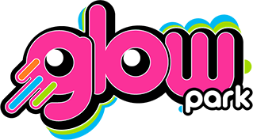

Do anúncio ao dinheiro no banco, numa linha só.
Hoje, uma festa passa por cinco sistemas e nenhum guarda a história inteira. O GlowHub liga a campanha à conversa, a conversa à festa e a festa ao dinheiro que entrou no banco.
Toque numa parada ou num ponto laranja para ver onde a festa se perde hoje.
Números do diagnóstico das festas e dos mapas de processo do financeiro, informados pela gestão da Glow Park. Serão confirmados na linha de base da etapa zero.
Onde cada ponto pesa
O diagnóstico das festas levantou nove pontos de atenção. Cada um pesa em pelo menos um de quatro eixos: receita, custo, controle e risco.
Leitura qualitativa, a ser confirmada na linha de base da etapa zero.
Toque numa linha para ver o que observamos e o que o GlowHub faz.
Uma leitura justa
Nenhum desses pontos é incomum. Redes que crescem rápido acumulam ferramentas, cada uma resolvendo o problema do momento. O passo seguinte natural é transformar soluções isoladas em uma operação única, e é isso que o GlowHub propõe.
O GlowHub, por dentro.
Um protótipo navegável, com dados de demonstração. Clique nas conversas, na agenda e nos painéis, ou siga uma visita guiada.
Dados de demonstração: nomes de famílias, vendedores e valores das telas são fictícios. Unidades, marca e personagens são da Glow Park.
Não é gasto, é troca.
O que a conta ainda não inclui
Menos da metade do preço, um quinto do prazo.
A Swot pesquisou em 07/10/2026 o que o mercado cobra pelo mesmo resultado, por três caminhos: contratar uma software house, comprar ferramentas prontas ou seguir como está.
Os dados da Glow Park protegidos em cada camada.
O GlowHub guarda o que a Glow Park tem de mais sensível: o dinheiro que entra e sai, as conversas com as famílias e dados de crianças. Para a Swot, segurança está no desenho, no código e na operação, e tudo o que está aqui já está no código, com teste automatizado.
12 semanas, porque a base já roda.
Quem já conhece a operação da Glow Park e já tem os três módulos em demonstração. As 12 semanas são para ligar os sistemas reais, virar o WhatsApp, rodar o piloto da IA e treinar as unidades.
O cronograma
O Financeiro e o WhatsApp oficial entram em produção na semana 8. As frentes correm em paralelo; o caminho crítico são os acessos aos fornecedores e à Meta, por isso os pedidos saem na primeira semana.
◆ entrada em produçãoP1, P2 e P3 portões de decisãobarra clara: frente de apoio
Um ritual semanal de 30 minutos com o ponto focal de cada área mostra o andamento por requisito e os riscos da semana. A homologação roda em ambiente próprio, com acesso para quem a Glow Park indicar.
O que cada lado garante
Perguntas da diretoria.
As dúvidas mais comuns, respondidas com números.
